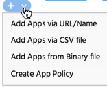

Use the Add menu at the top of the main section to add apps or create a new app policy. You can add apps that are not present in Appthority’s app inventory for your organization. Click to access this menu.
For example, you may want to add apps to vet them before adding them to user devices, or if you receive app requests from business users.

Appthority will attach the latest version of the app if there is a match in our database. If not, our automated process will queue the app for collection and analysis.
Select Add Apps for the option you want. A new window will open to perform the action you select.
Create App Policy
Select Create App Policy to create a new policy. Enter a name for the policy and use the filters to set the options you want. See Add New App Policy.